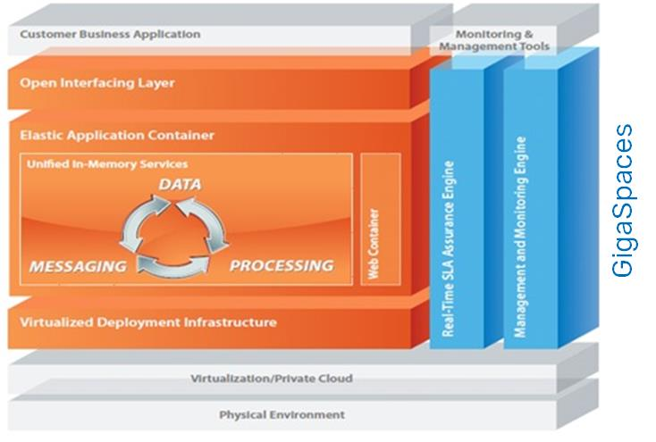

The

Supports any language, any platform, any API - Achieve interoperability, easy migration, reduced learning curves, and faster time to market by leveraging existing assets - such as code and programming expertise - through:
Standard API Support: SQL, JPA, Spring, REST and more.
Multi-language Interoperability: Java, .NET, and C++
Multi-platform Support: Any OS, physical or virtual.
API Mashup: Easily leverage modern APIs alongside existing standard APIs - enables you to use the right tool for the job at hand.
OpenSpaces is the
The OpenSpaces API is divided into four parts:
Core API
Messaging and Events
Space-Based Remoting
Integrations
Note: .NET version is for
The core package of OpenSpaces provides APIs for direct access to a data grid, internally referred to as a "Space." The main interface is the GigaSpace, which enables the basic interaction with the data grid. The core components include basic infrastructure support such as Space Java version | .NET version construction, simplified API using the
The events package is built on top of the core package, and provides simple object-based event processing components through the event containers, making it roughly equivalent to Java EE's message-driven beans. (The primary differences outside of API semantics are in the power of OpenSpaces' selection criteria and routing.) The event package enables simple construction of event-driven applications.
Another alternative for events is the usage of JMS 1.1 on top of
The events module includes components for simplified EDA/Service Bus development. These components allow event driven programming and provide two mechanisms for event-generation: a Polling Container Java version | .NET version uses polling received operations against the Space, and a Notify Container Java version | .NET version which uses the Space's built-in notification support.
The messaging grid aspect of the Space provides messaging capabilities such as:
Event-Driven capabilities - the ability to build event-driven processing applications. This model enables fast (in-memory-based) asynchronous modular processing, resulting in a very efficient and scalable processing paradigm.
Asynchronous production and consumption of information.
One-to-one, Many-to-One, One-to-Many and Many-to-Many relationships.
FIFO ordering. Java version | .NET version
Transaction Management Java version | .NET version
The Remoting Java version | .NET version package provides capabilities for clients to access remote services. Remoting in
Remoting can be viewed as the alternative to Java EE Session Beans, or Java RMI, as it provides all of their capabilities as well as supporting synchronous and asynchronous invocations, and dynamic scripting languages - enabling you to use Groovy or Ruby in your space-based applications.
The compute grid is a mechanism that allows you to run user code on all/some nodes of the grid, so that the code can run locally with the data.
Compute grids are an efficient solution when a computation requires a large data set to be processed, so that moving the code to where the data is, is much more efficient than moving the data to where the code is.
The process is widely known as map/reduce, and is used extensively by companies like Google whenever a large data set needs to be processed in a short amount of time.
For dynamic execution of code from the server side, use Task Execution. Java version | .NET version. The efficiency derives from the fact that the processing task is sent to all the desired grid nodes concurrently. A partial result is calculated using the data on that particular node, and then sent back to the client, where all the partial results are reduced to a final result.
With the Messaging and Events and Space-Based Remoting and Task Execution, we can build distributed parallel processing services
Sometimes the scalability bottleneck is within the processing capabilities. This means that there is a need to gain more processing power to be executed concurrently. In other words, there is a need for parallel processing. When there is no state involved, it is common to spawn many processes on multiple machines, and to assign a different task to each process.
However, the problem becomes much more complex when the tasks for execution require sharing of information.
Linear scalability: Elastically deployed/provisioned to cope with extreme demand/throughput during application runtime with no human intervention
Flexibility: Running a variety of application module types, from simple web modules to complex event processing modules
Smooth, risk-free deployment through identical development and production environments
Faster deployment through eliminating silos
Continuous deployment with no downtime
Lightweight application containers provide a business logic execution environment at the node level. They also translate SBA semantics and services to the relevant container development framework implementation. For example, space transactions are translated to Spring transactions, when a Spring lightweight container is used.
The Grid Service Container (GSC) is responsible for providing Grid capabilities, whereas the lightweight container implementation is responsible at the single VM level. These architectures are very powerful, as it enables applications to take advantage of the familiar programming models and services at the single VM level, and in addition provides grid capabilities and services.
Current implementations supported by
More information on the usage of the above integrations can be found in the Developer Guide Java version | .NET version.
Scaling is increasing or decreasing the resources based on the application requirements at any given time.
There are several types of scaling:
Horizontal Scaling - Increasing the number of instances or partitions if the service includes a space (partition), or having more instances if it is a stateless service (instance).
Vertical Scaling - Remain with the same number of instances, but the allocated memory or CPU can be updated for each instance.
The Spring framework container integration is included as part of
The Spring framework provides very elegant abstractions, which makes it very easy to build layered and decoupled applications.
Jetty is a very popular web container, which provides support for JEE web container specification services such as: Servlet, JavaServer Pages, JavaServer Faces, and others.
The integration with the Jetty web container allows you to run JEE web applications (.war files) in
Dynamic allocation of several instances of a web application (probably fronted by a load balancer).
Management of the instances running (if a GSC fails, the web application instances running on it will be instantiated on a different GSC).
SLA-monitor-based dynamic allocation and de-allocation of web application instances.
The deployed WAR is a pure Java EE-based web application. The application can be the most generic web application, and automatically make use of the Service Grid features. The web application can define a Space (either embedded or remote) very easily (either using Spring or not).
Instead of using Jetty Web Container, the Spring boot web application can be used as a client of the Space especially in a Kubernetes environment where there is no need to manage the SLA.
The .NET SBA application takes advantage of the ability to run business services and .NET code, co located with the data stored within the space.
The .NET container bridges the technical gap and provides a native .NET experience for .NET applications.
Mule is a popular open source Enterprise Services Bus implementation in Java. The Mule container integration allows you to run a Mule application on top of
Data access, messaging, parallel processing services, speeding up your application performance.
In-memory speed: Delivering unmatched performance by removing all physical I/O bottlenecks from the runtime flow
Scalability: Intelligently distribute any data and messaging load across all available resources
Capacity: Support terabytes of application data
High Availability: Built-in hot backup and self-healing capabilities for zero downtime
Consistency: Maintain data integrity with 100% transactional data handling
As an application platform,
An In-Memory Data Grid (IMDG) is a way of storing data across a grid of memory nodes. This service provides the application with:
Data storage capabilities.
Data query capabilities - single object, multiple object and aggregated complex queries.
Caching semantics - the ability to retrieve information from within-memory data structures.
Ability to execute business logic within the data - similar to database storage procedure capabilities.
It is important to note that the data grid, although a memory-based service, is fully transactional, and follows the ACID (Atomicity, Concurrency, Isolation and Durability) transactional rules.
The data grid uses the unified clustering layer, to provide a highly available and reliable service.
The main API to access the data grid service is the GigaSpace interface.
Detailed information about the virtualized deployment infrastructure can found in the Service Grid Layer section.
Detailed information about the virtualized deployment infrastructure can found in the Orchestration section.